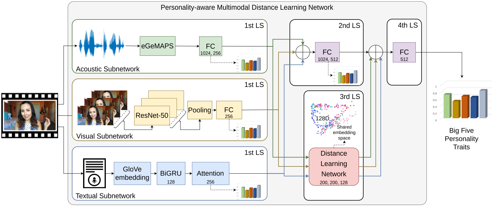
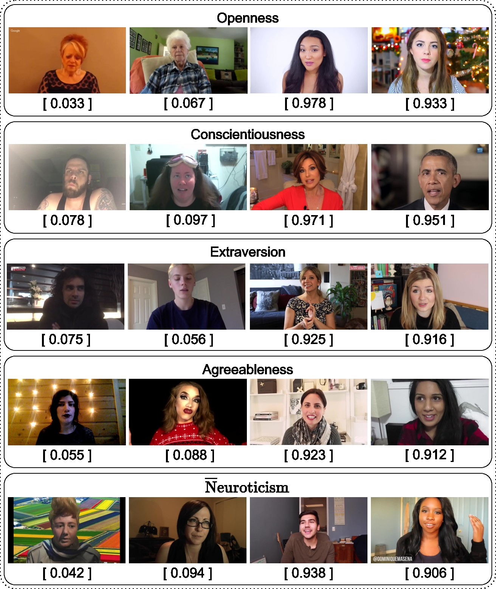
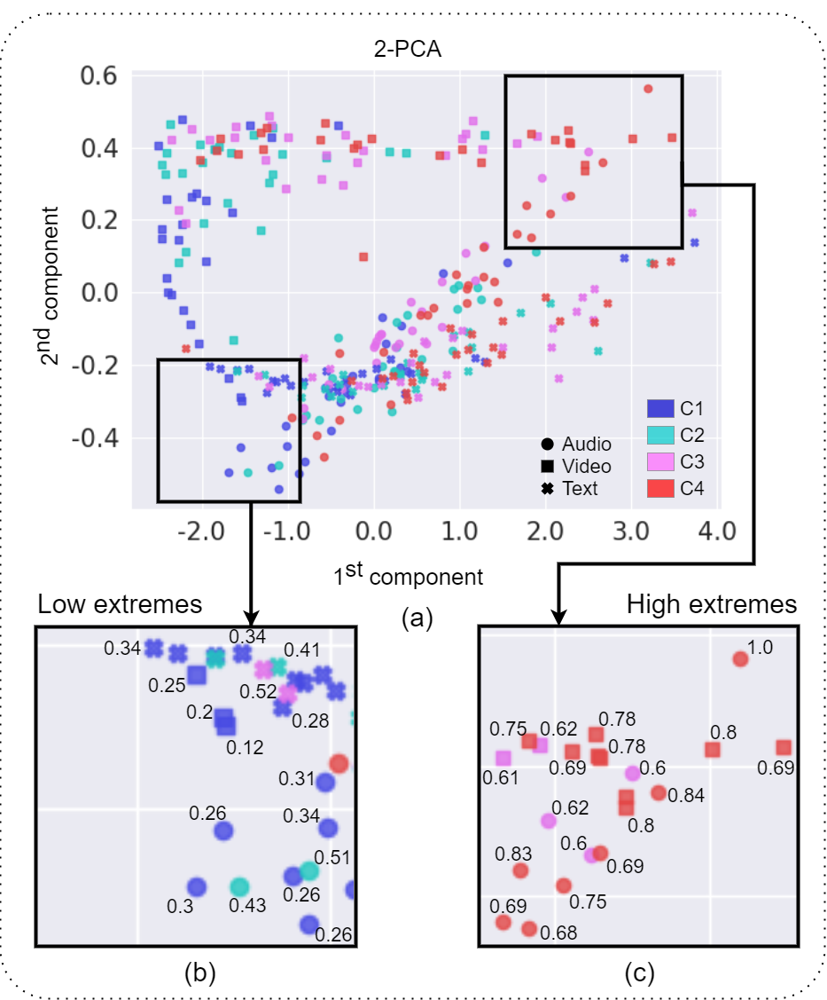

Enhancing Apparent Personality Trait Analysis
with Cross-Modal Embeddings
Ádám Fodor, Rachid R. Saboundji, András Lőrincz

Abstract
Automatic personality trait assessment is essential for high-quality human-machine interactions.
Systems capable of human behavior analysis could be used for self-driving cars,
medical research, and surveillance, among many others. We present a multimodal deep neural
network with a deep metric learning extension for apparent personality trait prediction trained on short
video recordings and exploiting modality invariant embeddings. Acoustic, visual, and textual
information are utilized to reach high-performance solutions in this task.
Due to the highly centralized target distribution of the analyzed dataset, the changes in the third digit are relevant.
Our proposed method addresses the challenge of under-represented extreme values, achieves
0.0033 MAE average improvement, and shows a clear advantage over the baseline multimodal
DNN without the introduced module.
Task
- Predict apparent personality traits (Big Five) from short video clips using multimodal audio, visual, and textual information.
- Enhance prediction accuracy, especially for under-represented extreme trait values, by exploiting modality-invariant embeddings with a Siamese network.
Challenges
- Multimodal fusion complexity: selecting modalities, designing architectures for fusion, and managing noisy, missing, or unbalanced data.
- Highly centralized target distribution causing the regression-to-the-mean problem, limiting accuracy on extreme trait values.
- Non-contextual and noisy textual transcripts limiting the quality of semantic features.
- Leveraging complementary intra- and inter-modal information robustly and effectively.
Proposed Method
- Use modality-specific subnetworks for audio (eGeMAPS features), visual (ResNet-50 extracted frame features), and text (GloVe embeddings processed by Bi-GRU with attention).
- Train a Siamese network with a modified multi-similarity loss to generate modality-invariant embeddings emphasizing extreme samples for robust cross-modal learning.
- Fuse original modality-specific features and cross-modal embeddings through fully connected layers for final Big Five trait prediction.
- Adopt Bell loss function combined with MAE and MSE to address regression-to-the-mean and improve optimization stability.
- Evaluate on ChaLearn First Impressions V2 dataset with 15-second video clips and crowdsourced trait annotations.
Main Results
- Multimodal models outperform monomodal ones; combining audio, video, and text achieves the best overall prediction accuracy.
- Proposed cross-modal embeddings improve average accuracy (1-MAE) from 0.9094 to 0.9127 on the full test set.
- Enhanced prediction of extreme personality trait cases (both low and high extremes) compared to baseline multimodal models.
- Visualization of embeddings shows clear separation of extreme trait classes in the shared embedding space.
- Method surpasses prior systems on this challenging dataset and offers a novel framework for robust, explainable apparent personality prediction.
Visualization
Examples of the First Impression V2 dataset. For each video the ground truth Big Five
scores are provided.
For each trait, the first two samples instantiate the high extremes, and the
last two examples demonstrate the low extremes of a given trait.

The figure shows a two-component Principal Component Analysis (PCA) calculated on the multimodal inputs as visualization,
using only the NEUroticism ground truth values
and trait classes within plots. The four personality classes are
represented with colors, where the blue is the low extreme (C1), and the red is the high extreme class
(C4). In the (b) and (c), we emphasize embeddings within the two extreme poles of NEUroticism.

BibTex
If you found our research helpful or influential please consider citing:
@article{fodor2021multimodal,
author = {Ádám Fodor, Rachid R. Saboundji, András Lőrincz},
title = {Enhancing Apparent Personality Trait Analysis with Cross-Modal Embeddings},
journal = {Annales Universitatis Scientiarium Budapestinensis de Rolando Eötvös Nominatae. Sectio Computatorica, MaCS 2020 Special Issue},
pages = {1-14},
year = {2021},
doi = {10.48550/arXiv.2405.03846}
}